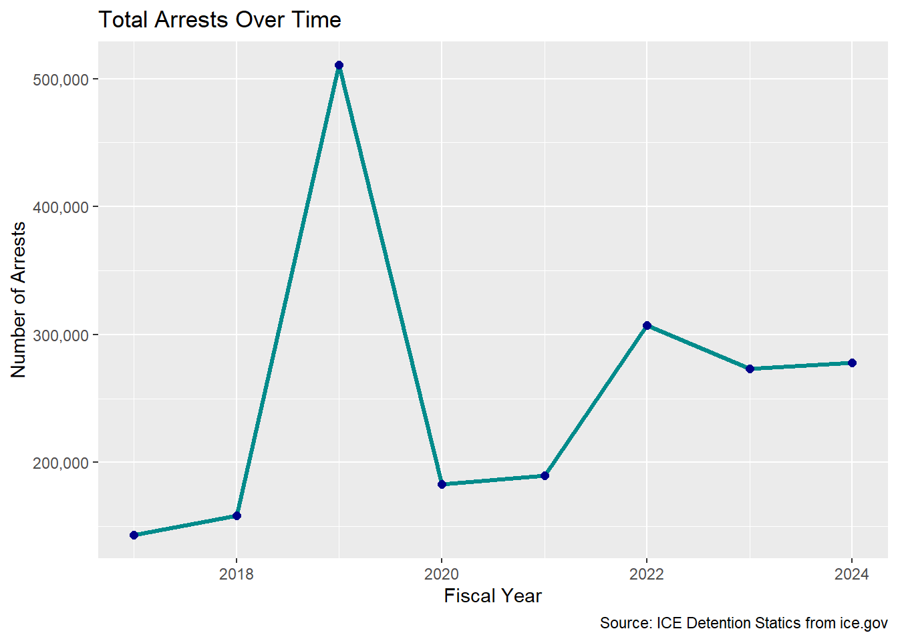
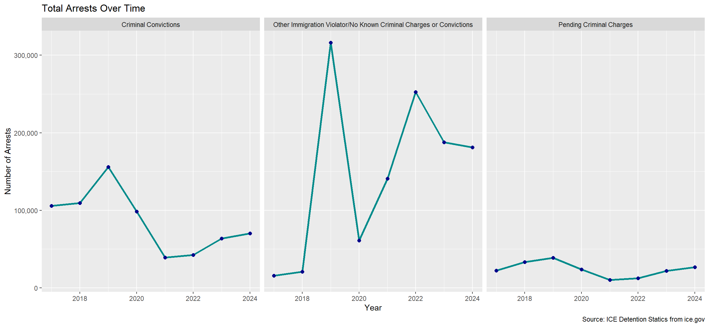
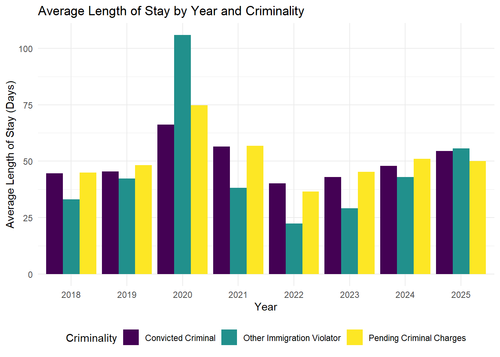
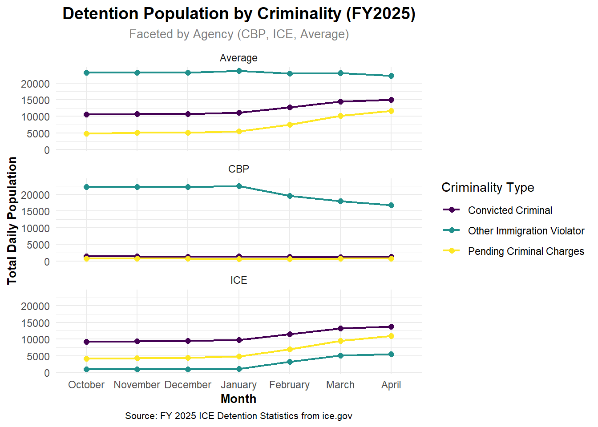

Patterns of Detention: Tracking ICE + CBP Enforcement Since FY 2017
Presentation Video
Presentation Slides
Our Project
Motivation
In recent months, the Trump administration has announced significant expansions to immigration enforcement efforts, particularly within the Immigration and Customs Enforcement (ICE) and Customs and Border Protection (CBP) agencies under the Department of Homeland Security. Given the controversial nature of these changes and the fact that we are just three months into Trump’s return to office, this project aims to better understand their implications by analyzing trends in immigration enforcement. We analyze book-in and length of stay data from fiscal years 2017 through 2024 to place current developments in historical context and assess how prior enforcement patterns may inform present concerns. By studying the recent history of ICE and CBP, we aim to better understand the potential consequences of recent policy shifts.
Our research questions are:
What do detention trends from the fiscal years 2017-2024 look like?
What are the detention trends of 2019 specifically? Why was this a unique year?
What are the current detention trends for FY2025?
Background
In the United States, our immigration enforcement system involves multiple federal agencies, most importantly U.S. Immigration and Customs Enforcement (ICE) and U.S. Customs and Border Protection (CBP), both under the U.S. Department of Homeland Security (DHS). ICE is tasked with interior immigration enforcement and oversees the detention and removal of individuals already present in the United States. While CBP is responsible for securing U.S. borders and inspecting individuals at ports of entry. While CBP apprehends unauthorized individuals attempting to cross the border, ICE may detain individuals for longer-term detention and deportation proceedings.
The U.S. immigration detention regime has evolved significantly over the last several presidential administrations, reflecting broader political shifts in immigration policy. Under the Trump administration (2017–2021), immigration enforcement expanded rapidly, marked by increased arrests, prolonged detention periods, and controversial practices such as family separation. The Biden administration sought to scale back enforcement priorities and reduce reliance on detention, though results were mixed. As Trump returns to office in 2025, his administration has begun to reimplement and expand aggressive enforcement measures.
Fiscal Year (FY): The data in our project is organized by fiscal years, which span from October 1 to September 30 of the following year. This is important to keep in mind, as many people assume data corresponds to the calendar year (January to December). The fiscal year structure can also complicate interpretations of presidential policy impacts, since administrations change in January.
U.S. Immigration and Customs Enforcement (or ICE): ICE is a federal agency responsible for interior immigration enforcement, including the arrest, detention, and removal of noncitizens within the United States.
U.S. Customs and Border Protection (CBP): CBP is the agency tasked with enforcing immigration and customs laws at U.S. borders and ports of entry.
“Other Immigration Violator”: This category, used in detention data, can be misleading or not immediately clea. Despite its potentially criminal connotation, it refers to individuals without criminal convictions or pending criminal charges. These are civil immigration violators, such as those who overstayed a visa or entered the U.S. without authorization but are not being prosecuted for a separate criminal offense.
Data Collection
The ICE Detention Statistics collect crucial information for understanding and visualizing trends within the detention system. Our analysis focuses on key variables consistently tracked across multiple years, including the Number of Book-Ins, representing the total admissions into ICE detention facilities during a specific period. Criminality, which details the primary reasons for detention through various categories of criminal offenses or immigration violations, is also a core element. The Length of Stay, or the duration individuals spend in custody, and the Detention Population, indicating the number of individuals held at a given time, are essential metrics. Furthermore, the Facility Type, specifying the kind of detention center, and the Apprehending Agency, identifying whether ICE or CBP initially apprehended the individual, provide important context. Finally, the Month and Year of the data allow for meaningful temporal analysis of these trends. While specific categories within these variables might evolve slightly over time, these core elements remain consistent for our analysis.
The data is collected continuously as individuals are apprehended, processed, and detained by ICE. However, the publicly available datasets are compiled and released on a fiscal year (FY) basis. Each dataset covers the period from October 1st of the previous calendar year to September 30th of the current calendar year. For example, the “FY 2024 Detention Statistics” covers October 1, 2023, to September 30, 2024.
The data is presumably collected for a wide variety of reasons. The U.S. government, and it’s agencies, collect so much data to monitor and quantify their actions. Data collection helps ICE track who is in custody, manage capacity across facilities, and allocate resources like staffing and funding. The data also serves broader purposes, including informing policy decisions, evaluating the impact of enforcement practices, and providing transparency to Congress, other oversight entities, and us (the public).
While we don’t know all the details about how the data is collected, it likely originates through a combination of manual entry and electronic systems as individuals move through the immigration enforcement process. ICE personnel likely have to track information during apprehension, processing, and detention. This information is likely managed through robust systems.
The data was collected by U.S. Immigration and Customs Enforcement (ICE), primarily through its sub-agency Enforcement and Removal Operations (ERO). Additionaly, man ICE personnel are involved in the collection, including officers who apprehend and process individuals, detention facility staff who manage records, and administrative staff who enter and maintain data in ICE’s systems. Data analysts later compile this information for reporting and oversight.
Data acquisition
Molly and I spent time exploring a range of datasets to find one that best aligned with our research questions. After a lot of searching, we identified the ICE Detention Statistics as the most comprehensive and relevant source. It provides consistent and clear data directly from the government source, allowing us to analyze trends across fiscal years with a high degree of reliability.
We obtained this data from the U.S. Immigration and Customs Enforcement (ICE). The ICE website has a page where they pubish their year-end detention statistics for public consumption (https://www.ice.gov/detain/detention-management#stats).
Data Understanding
How much data do you have?
For our project, we are working with nine datasets total (one for each Fiscal year between 2017 through 2025). Each data set contains a wealth of information for us to work with.
What types of measurements?
Our data visualizations measure temporal trends (by month and year), the number of Book-Ins (continuous numeric variable), criminality classification (three categories: Convicted Criminal, Pending Criminal Charges, Other Immigration Violator), facility type (four categories: Adult, Family, Hospital, Juvenile), and detention population (continuous numeric variable).
Anything you needed to clean before getting started?
Yes, the original datasets were not easily transferable into RStudio due to formatting and compatibility issues. As a result, we created our own cleaned and consolidated datasets to focusing on the variables we were interested in analyzing.
RQ1: What do detention trends from the fiscal years 2017-2024 look like?
Commentary
Trump’s first term spanned from 2017 to 2020, followed by Biden’s presidency from 2021 to 2024. According to arrest data from ICE.gov, 2019 stands out as a particularly significant year, with over 500,000 arrests—nearly double the second-highest year, 2022, during Biden’s term. This surge in 2019 coincided with a series of aggressive policy changes under the Trump administration aimed at mass deportations and intensified border enforcement. The sharp drop in arrests in 2020—to around 200,000—was likely driven more by the onset of the COVID-19 pandemic than by any policy shift, as public health measures and travel restrictions disrupted enforcement operations.
Given this context, 2019 offers the clearest view into the full impact of Trump-era immigration enforcement policies, free from the external disruptions seen in 2020. While the Biden administration did not see low arrest numbers—averaging around 300,000 per year—this level of enforcement appears more stable and less extreme compared to the peak under Trump. The data suggests that Trump’s administration facilitated a particularly aggressive spike in arrests, reflective of its hardline immigration stance.

Commentary
While ICE does not provide much publicly available demographic data, it does report arrest data by “criminality” status. We chose to facet our analysis by this variable—not only because it is emphasized by ICE itself, but also because it aligns with common rhetoric from the Trump administration, which has frequently portrayed undocumented immigrants as criminals.
However, the data challenges this narrative. In nearly every fiscal year we examined (with the exception of 2020, which was significantly affected by the COVID-19 pandemic), the largest category of arrests involved individuals classified as having “no known criminal charges” or labeled as “other immigration violators.” The latter is a term often used to describe individuals whose only offense is a civil violation of U.S. immigration law—not a criminal conviction.
By framing immigrants as criminals, the Trump administration sought to position immigration enforcement as a matter of public safety and law enforcement. But the data tells a different story: the vast majority of those arrested do not fit the profile of dangerous criminals. This disconnect underscores the importance of critically examining how enforcement policies are justified and who they actually target.
# A tibble: 747 × 5
Year Month Agency Criminality `Length of Stay`
<dbl> <chr> <chr> <chr> <dbl>
1 2018 Oct CBP Convicted Criminal 27.4
2 2018 Oct CBP Pending Criminal Charges 37.6
3 2018 Oct CBP Other Immigration Violator 24.4
4 2018 Oct ICE Convicted Criminal 54.9
5 2018 Oct ICE Pending Criminal Charges 50.3
6 2018 Oct ICE Other Immigration Violator 50.3
7 2018 Oct Overall Average Convicted Criminal 43.7
8 2018 Oct Overall Average Pending Criminal Charges 48.1
9 2018 Oct Overall Average Other Immigration Violator 25.8
10 2018 Nov CBP Convicted Criminal 29
# ℹ 737 more rows
Commentary
The grouped bar chart reveals significant variations in the average length of stay in detention between 2018 and 2025, and variation across criminality types. Notably, during 2020 we see a striking peak for all criminalities, but espeically for “Other Immigraiton Violators.” I can imagine that this is a result of an increased backlog in processing and releasing detainees during the height of the COVID-19 pandemic.
Overall, while fluctuations exist year-to-year for all categories, the average length of stay fluctuates between criminality types. This visualization effectively highlights these disparities and temporal shifts, prompting further investigation into the underlying policy changes or operational factors driving these trends in detention durations.
RQ2: What are the detention trends of 2019 specifically? Why was this a unique year?
Commentary
Focusing specifically on fiscal year 2019 reveals a noticeable difference in activity between ICE and CBP. While ICE maintained relatively consistent levels of Book-Ins throughout the year, CBP experienced a significant spike between March and May. This surge likely reflects a shift in border enforcement policy rather than changes in deportation practices. The timing and nature of this increase align with the Trump administration’s heightened focus on the U.S.–Mexico border during his first term. These trends suggest that resources and enforcement efforts during this period were disproportionately directed toward CBP, while ICE operations remained more stable.
[1] "IGSA" "Hold" "Juvenile"
[4] "Other" "DIGSA" "CDF / DIGSA"
[7] "Family" "Hospital" "USMS IGA"
[10] "NOT DEFINED" "BOP" "Staging"
[13] "SPC" "CDF" "DIGSA / Family"
[16] "IGSA / USMS IGA" "DIGSA / IGSA" "USMS CDF"
[19] "USMS CDF / USMS IGA"# A tibble: 19 × 2
type_detailed n
<chr> <int>
1 IGSA 386
2 USMS IGA 202
3 Hold 174
4 Hospital 87
5 NOT DEFINED 59
6 Other 49
7 BOP 43
8 Juvenile 27
9 DIGSA 22
10 CDF 13
11 Staging 9
12 SPC 6
13 Family 5
14 USMS CDF 2
15 CDF / DIGSA 1
16 DIGSA / Family 1
17 DIGSA / IGSA 1
18 IGSA / USMS IGA 1
19 USMS CDF / USMS IGA 1[1] "Adult" "Adult" "Juvenile" "Adult" "Adult" "Adult"
Adult Family Hospital Juvenile
969 6 87 27 # A tibble: 4 × 2
type_detailed n
<chr> <int>
1 Adult 969
2 Hospital 87
3 Juvenile 27
4 Family 6Source: ICE Detention Trends - vera.org
Commentary
After examining overall trends in 2019, we turned our attention to the physical locations of ICE detention facilities, particularly in light of the differences in arrest patterns between CBP and ICE. The geographic distribution of facilities reveals clear concentrations along the U.S.–Mexico border, the coasts, and in major metropolitan areas. Notably, there is a dense cluster of facilities both at the southern border and in the Northeastern U.S., underscoring enforcement priorities in those regions.
Another key insight from the visualization involves the types of facilities. The original dataset—sourced from the Vera Institute’s ICE Detention Trends project—categorizes facilities not only by function but also by funding structure. Since our focus was on the operational role of the facilities rather than their funding sources, we simplified the categories to emphasize their core functions. In particular, we grouped most adult-serving facilities under the label “Adult.”
The distribution of family facilities is especially telling. All six family detention centers are located along the Texas–Mexico border, suggesting a deliberate strategy to process and detain immigrant families—especially those from Mexico and Central America—at the point of entry. Juvenile and hospital facilities were more geographically dispersed, with hospital facilities in particular spread across a wider range of states.
RQ3: What are the current detention trends for FY2025?
# A tibble: 72 × 4
Month Criminality Agency `Daily Population`
<chr> <chr> <chr> <dbl>
1 October Total CBP 2443
2 October Convicted Criminal CBP 137
3 October Pending Criminal Charges CBP 741
4 October Other Immigration Violator CBP 22319
5 October Total ICE 14284
6 October Convicted Criminal ICE 9242
7 October Pending Criminal Charges ICE 4169
8 October Other Immigration Violator ICE 873
9 October Total Average 38714
10 October Convicted Criminal Average 10611
# ℹ 62 more rows
##Commentary
The data paints a picture of detention patterns and trends in early FY2025. Importantly, we can see that the overall detention population is heavily weighted towards “Other Immigration Violators” across all agencies.
A closer examination of agency-specific data reveals distinct trends. First, we can see that U.S. Customs and Border Protection (CBP) facilities have a much larger population of “Other Immigration Violator” that is those without any criminal charges. This is likely because their facilities apprehend those at the borders vs. ICE which appends people settled within communities (more likely going after criminals).
Moreover, we see a slight increase in average detention population in the early parts of FY2025, suggesting harsher polices towards undocumented immigrants. But it’s also clear the increase in overall population can be largely attributed to increases in ICE detention, whereas detention population at CBP has remained consistent.
This increasing trend within ICE, masked by the broader “Average,” suggests a potentially intensifying focus or higher volume of such cases handled by the agency. Understanding the reasons behind this divergence between CBP and ICE, and the drivers of the increasing detention of “Convicted Criminals” and those with “Pending Criminal Charges” by ICE, becomes crucial for a comprehensive understanding of immigration enforcement in FY2025. The consistently high numbers for “Other Immigration Violators” across the board also is intresting and requires further examination.
Finally, I think this visualization serves as an interesting “first look” into FY2025. However, as the Trump administration continues and expands its policies, I expect we will see even more stark increases in ICE detention population and overall detention population.
# A tibble: 36 × 3
Month `Facility Type` `ICE Daily Population`
<chr> <chr> <dbl>
1 October Total 45584
2 October FRC 2082
3 October Adult 43502
4 November Total 46202
5 November FRC 1563
6 November Adult 44639
7 December Total 48783
8 December FRC 1978
9 December Adult 46805
10 Janurary Total 46947
# ℹ 26 more rowsConclusions / Big Picture
This project examined detention trends from fiscal years 2017–2025 to understand how immigration enforcement has evolved across presidential administrations, with a particular focus on FY 2019 as a benchmark for assessing changes under the Trump and Biden administrations, and early indications from Trump’s current term.
RQ1: What do detention trends from FY 2017–2024 look like?
By comparing the Trump and Biden administrations, it becomes clear that Trump pursued a significantly more aggressive approach to immigration enforcement. Fiscal Year 2019, two years into Trump’s first term, saw an unprecedented peak of over 500,000 book-ins—a level unmatched in recent years. While Biden’s administration also maintained robust enforcement practices, it never reached this scale.
The drop in detention numbers during FY 2020 and 2021 aligns with disruptions caused by the COVID-19 pandemic, which likely reduced enforcement activity and strained operational capacity.
Importantly, the data show that a majority of individuals detained during the Trump administration—especially in FY 2019—had no known criminal charges beyond immigration violations. Over 300,000 arrests that year involved individuals without criminal convictions or pending charges. In contrast, FY 2020 saw a higher proportion of detainees with criminal records, likely due to prioritization amid limited resources during the pandemic. Under Biden, detention of individuals without criminal charges remained common, challenging persistent narratives, particularly from Trump-era rhetoric, that equate undocumented immigrants with criminality.
When analyzing length of detention by criminality status, individuals with criminal charges were generally held for longer periods. However, in FY 2020, all groups experienced extended stays, likely due to legal system backlogs during the pandemic. Those without criminal charges may have been deprioritized, contributing to longer detention times.
RQ2: What made FY 2019 a unique year?
FY 2019 was selected as a critical year for analysis due to its timing: two years into Trump’s first term and unaffected by the pandemic. This year offers a clear picture of his administration’s immigration enforcement strategy in full effect.
An agency-level analysis revealed that Customs and Border Protection (CBP) consistently recorded more book-ins than Immigration and Customs Enforcement (ICE), peaking in May before declining toward September. ICE’s figures remained more stable throughout the year. This pattern supports the idea that Trump focused more heavily on preventing unauthorized entry (via CBP) than on interior enforcement or deportation (via ICE). This aligns with his public statements framing border security as essential to national safety, often through dehumanizing rhetoric about migrants.
Spatial data from early 2020—used as a proxy for the end of 2019—showed that enforcement facilities were concentrated in major cities and along the U.S.–Mexico border. Notably, there were approximately six family detention facilities located in Texas near the southern border. The placement and nature of these facilities raise serious concerns about the treatment of children and families, given numerous reports of neglect and abuse within such centers (Detention Watch Network, 2025).
Juvenile and hospital-based detention facilities were often located near adult facilities but were slightly more geographically dispersed. In contrast, the placement of family centers appears more strategically targeted—primarily at migrants crossing the southern border.
RQ3: What do detention trends for 2025 indicate so far?
While 2025 data are still emerging and cannot yet be used to draw firm conclusions, several notable trends are visible. One key shift is that ICE, rather than CBP, is leading in book-ins—an apparent reversal from Trump’s first term. This may suggest a shift from entry prevention to interior enforcement and deportation, which is consistent with recent rhetoric and reports of increased ICE activity.
There have already been local reports of ICE operations near college campuses, including one sighting near Macalester College. The data so far show a rise in book-ins across all criminality types, including individuals with no criminal charges, indicating a steady ramp-up of enforcement. Although the average detention population remains similar to levels seen at the end of Biden’s term, early indicators point to a rising trend—especially for those with pending or confirmed criminal charges.
Given the historical precedent of FY 2019, and the patterns beginning to emerge in 2025, it is likely that immigration enforcement will continue to intensify under Trump’s current administration.
Final Thoughts
Our findings demonstrate that immigration detention policy in the U.S. is highly influenced by presidential administrations and broader sociopolitical factors. The Trump administration’s rhetoric and enforcement strategies had a direct impact on who was detained, for how long, and where. The exceptional nature of FY 2019 provides a baseline for assessing the direction and intensity of future enforcement actions. The early months of 2025 suggest a potential return to aggressive enforcement, though with evolving agency roles and tactics.
These insights challenge dominant narratives about the criminality of undocumented immigrants and raise important questions about the goals, fairness, and human cost of the U.S. immigration detention system.
Limitations and Future Work
While this analysis provides valuable insights into immigration detention trends from FY 2017–2025, several limitations affect the scope and depth of the findings. These constraints should be taken into account when interpreting the results and considering future research directions.
Limited Historical Range of Data
One significant limitation is the temporal scope of the data. Initially, we intended to include data spanning multiple administrations, including that of President Obama, to provide a broader historical context. However, ICE data available through ice.gov did not include the full span of the Obama administration, particularly the earlier years. As a result, our analysis is limited to comparisons between the Trump and Biden administrations. This constraint narrows our ability to make generalizations about long-term policy trends and makes it more difficult to assess how recent actions compare to broader historical norms.
Future Work: Expanding the dataset to include earlier administrations—if data becomes available—would greatly strengthen the analysis. This could offer a more comprehensive view of the evolution of immigration detention policies over time, and better isolate the effects of individual administrations.
Limited Access to Demographic and Vulnerability Data
Another limitation is the lack of consistent demographic and vulnerability data across administrations. While ICE provides information about vulnerable populations (such as minors, families, or individuals with medical conditions) during the Biden administration, comparable data were not available for Trump’s term. This inconsistency limits our ability to assess how enforcement impacted different subpopulations over time.
The absence of this data is itself revealing; it highlights differences in transparency and reporting priorities across administrations. Still, it constrains our ability to conduct intersectional analyses that account for age, gender, family status, or health vulnerabilities in the detention system.
Future Work: Future researchers should prioritize acquiring more comprehensive demographic data, either through FOIA requests, partnerships with NGOs, or expanded government datasets. This would enable more nuanced, equity-focused analyses and help uncover disparities in how immigration enforcement is applied.
Overall, while our findings offer important insights into federal immigration enforcement patterns, they represent only part of a larger and more complex system. Expanding the dataset both temporally and demographically would help paint a more complete and representative picture of U.S. immigration detention policy.